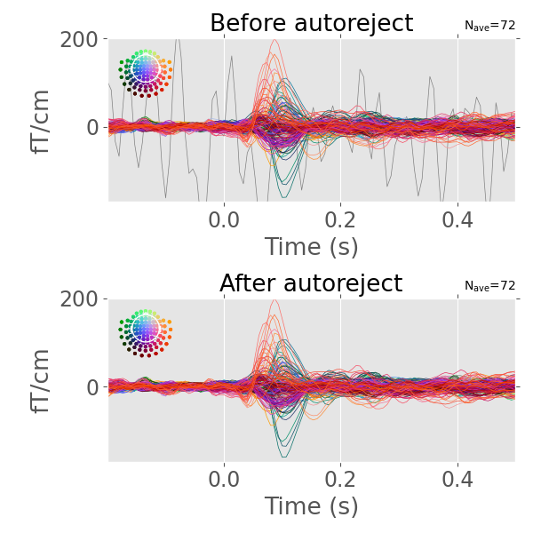
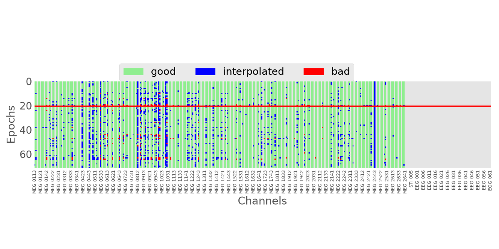

Note
Go to the end to download the full example code.
Automatically repair epochs#
This example demonstrates how to use autoreject to automatically
repair epochs.
# Author: Mainak Jas <mainak.jas@telecom-paristech.fr>
# Denis A. Engemann <denis.engemann@gmail.com>
# License: BSD-3-Clause
Let us first define the parameters. n_interpolates are the \(\rho\)
values that we would like autoreject to try and consensus_percs
are the \(\kappa\) values that autoreject will try (see the
autoreject paper) for
more information on these parameters).
Epochs with more than \(\kappa * N\) sensors (\(N\) total sensors) bad are dropped. For the rest of the epochs, the worst \(\rho\) bad sensors (as determined by channel-level thresholds) are interpolated. The exact values of these parameters are not preselected but learned from the data. If the number of bad sensors for a particular trial is less than \(\rho\), all the bad sensors are interpolated.
import numpy as np
n_interpolates = np.array([1, 4, 32])
consensus_percs = np.linspace(0, 1.0, 11)
For the purposes of this example, we shall use the MNE sample dataset. Therefore, let us make some MNE related imports.
import mne # noqa
from mne.utils import check_random_state # noqa
from mne.datasets import sample # noqa
Now, we can import the class required for rejecting and repairing bad
epochs. autoreject.compute_thresholds() is a callable which must be
provided to the autoreject.AutoReject class for computing
the channel-level thresholds.
from autoreject import (AutoReject, set_matplotlib_defaults) # noqa
Let us now read in the raw fif file for MNE sample dataset.
check_random_state(42)
data_path = sample.data_path()
meg_path = data_path / 'MEG' / 'sample'
raw_fname = meg_path / 'sample_audvis_filt-0-40_raw.fif'
raw = mne.io.read_raw_fif(raw_fname, preload=True)
Opening raw data file /home/circleci/mne_data/MNE-sample-data/MEG/sample/sample_audvis_filt-0-40_raw.fif...
Read a total of 4 projection items:
PCA-v1 (1 x 102) idle
PCA-v2 (1 x 102) idle
PCA-v3 (1 x 102) idle
Average EEG reference (1 x 60) idle
Range : 6450 ... 48149 = 42.956 ... 320.665 secs
Ready.
Reading 0 ... 41699 = 0.000 ... 277.709 secs...
We can then read in the events
event_fname = meg_path / 'sample_audvis_filt-0-40_raw-eve.fif'
event_id = {'Auditory/Left': 1, 'Auditory/Right': 2}
tmin, tmax = -0.2, 0.5
events = mne.read_events(event_fname)
And pick MEG channels for repairing. Currently, autoreject can repair
only one channel type at a time.
raw.info['bads'] = []
picks = mne.pick_types(raw.info, meg='grad', eeg=False, stim=False, eog=False,
include=[], exclude=[])
Now, we can create epochs. The reject params will be set to None
because we do not want epochs to be dropped when instantiating
mne.Epochs.
raw.del_proj() # remove proj, don't proj while interpolating
epochs = mne.Epochs(raw, events, event_id, tmin, tmax,
baseline=(None, 0), reject=None,
verbose=False, detrend=0, preload=True)
autoreject.AutoReject internally does cross-validation to
determine the optimal values \(\rho^{*}\) and \(\kappa^{*}\)
Note that autoreject.AutoReject by design supports
multiple channels.
If no picks are passed, separate solutions will be computed for each channel
type and internally combined. This then readily supports cleaning
unseen epochs from the different channel types used during fit.
Here we only use a subset of channels to save time.
ar = AutoReject(n_interpolates, consensus_percs, picks=picks,
thresh_method='random_search', random_state=42)
# Note that fitting and transforming can be done on different compatible
# portions of data if needed.
ar.fit(epochs['Auditory/Left'])
epochs_clean = ar.transform(epochs['Auditory/Left'])
evoked_clean = epochs_clean.average()
evoked = epochs['Auditory/Left'].average()
Running autoreject on ch_type=grad
0%| | Creating augmented epochs : 0/204 [00:00<?, ?it/s]
0%| | Creating augmented epochs : 1/204 [00:00<00:22, 9.21it/s]
1%| | Creating augmented epochs : 2/204 [00:00<00:25, 7.97it/s]
1%|▏ | Creating augmented epochs : 3/204 [00:00<00:26, 7.60it/s]
2%|▏ | Creating augmented epochs : 4/204 [00:00<00:26, 7.43it/s]
2%|▏ | Creating augmented epochs : 5/204 [00:00<00:27, 7.33it/s]
3%|▎ | Creating augmented epochs : 6/204 [00:00<00:27, 7.29it/s]
3%|▎ | Creating augmented epochs : 7/204 [00:00<00:27, 7.24it/s]
4%|▍ | Creating augmented epochs : 8/204 [00:01<00:27, 7.18it/s]
4%|▍ | Creating augmented epochs : 9/204 [00:01<00:27, 7.16it/s]
5%|▍ | Creating augmented epochs : 10/204 [00:01<00:27, 7.13it/s]
5%|▌ | Creating augmented epochs : 11/204 [00:01<00:27, 7.12it/s]
6%|▌ | Creating augmented epochs : 12/204 [00:01<00:26, 7.11it/s]
6%|▋ | Creating augmented epochs : 13/204 [00:01<00:26, 7.11it/s]
7%|▋ | Creating augmented epochs : 14/204 [00:01<00:26, 7.09it/s]
7%|▋ | Creating augmented epochs : 15/204 [00:02<00:26, 7.08it/s]
8%|▊ | Creating augmented epochs : 16/204 [00:02<00:26, 7.07it/s]
8%|▊ | Creating augmented epochs : 17/204 [00:02<00:26, 7.07it/s]
9%|▉ | Creating augmented epochs : 18/204 [00:02<00:26, 7.07it/s]
9%|▉ | Creating augmented epochs : 19/204 [00:02<00:26, 7.07it/s]
10%|▉ | Creating augmented epochs : 20/204 [00:02<00:26, 7.06it/s]
10%|█ | Creating augmented epochs : 21/204 [00:02<00:25, 7.05it/s]
11%|█ | Creating augmented epochs : 22/204 [00:03<00:25, 7.05it/s]
11%|█▏ | Creating augmented epochs : 23/204 [00:03<00:25, 7.03it/s]
12%|█▏ | Creating augmented epochs : 24/204 [00:03<00:25, 7.04it/s]
12%|█▏ | Creating augmented epochs : 25/204 [00:03<00:25, 7.04it/s]
13%|█▎ | Creating augmented epochs : 26/204 [00:03<00:25, 7.04it/s]
13%|█▎ | Creating augmented epochs : 27/204 [00:03<00:25, 7.04it/s]
14%|█▎ | Creating augmented epochs : 28/204 [00:03<00:25, 7.03it/s]
14%|█▍ | Creating augmented epochs : 29/204 [00:04<00:24, 7.03it/s]
15%|█▍ | Creating augmented epochs : 30/204 [00:04<00:24, 7.03it/s]
15%|█▌ | Creating augmented epochs : 31/204 [00:04<00:24, 7.03it/s]
16%|█▌ | Creating augmented epochs : 32/204 [00:04<00:24, 7.03it/s]
16%|█▌ | Creating augmented epochs : 33/204 [00:04<00:24, 7.03it/s]
17%|█▋ | Creating augmented epochs : 34/204 [00:04<00:24, 7.03it/s]
17%|█▋ | Creating augmented epochs : 35/204 [00:04<00:24, 7.02it/s]
18%|█▊ | Creating augmented epochs : 36/204 [00:05<00:23, 7.03it/s]
18%|█▊ | Creating augmented epochs : 37/204 [00:05<00:23, 7.03it/s]
19%|█▊ | Creating augmented epochs : 38/204 [00:05<00:23, 7.02it/s]
19%|█▉ | Creating augmented epochs : 39/204 [00:05<00:23, 7.01it/s]
20%|█▉ | Creating augmented epochs : 40/204 [00:05<00:23, 7.01it/s]
20%|██ | Creating augmented epochs : 41/204 [00:05<00:23, 7.01it/s]
21%|██ | Creating augmented epochs : 42/204 [00:05<00:23, 7.01it/s]
21%|██ | Creating augmented epochs : 43/204 [00:06<00:22, 7.02it/s]
22%|██▏ | Creating augmented epochs : 44/204 [00:06<00:22, 7.02it/s]
22%|██▏ | Creating augmented epochs : 45/204 [00:06<00:22, 7.02it/s]
23%|██▎ | Creating augmented epochs : 46/204 [00:06<00:22, 7.02it/s]
23%|██▎ | Creating augmented epochs : 47/204 [00:06<00:22, 7.01it/s]
24%|██▎ | Creating augmented epochs : 48/204 [00:06<00:22, 7.01it/s]
24%|██▍ | Creating augmented epochs : 49/204 [00:06<00:22, 7.01it/s]
25%|██▍ | Creating augmented epochs : 50/204 [00:07<00:21, 7.01it/s]
25%|██▌ | Creating augmented epochs : 51/204 [00:07<00:21, 7.01it/s]
25%|██▌ | Creating augmented epochs : 52/204 [00:07<00:21, 7.01it/s]
26%|██▌ | Creating augmented epochs : 53/204 [00:07<00:21, 7.01it/s]
26%|██▋ | Creating augmented epochs : 54/204 [00:07<00:21, 7.01it/s]
27%|██▋ | Creating augmented epochs : 55/204 [00:07<00:21, 7.01it/s]
27%|██▋ | Creating augmented epochs : 56/204 [00:07<00:21, 7.01it/s]
28%|██▊ | Creating augmented epochs : 57/204 [00:08<00:20, 7.01it/s]
28%|██▊ | Creating augmented epochs : 58/204 [00:08<00:20, 7.01it/s]
29%|██▉ | Creating augmented epochs : 59/204 [00:08<00:20, 7.02it/s]
29%|██▉ | Creating augmented epochs : 60/204 [00:08<00:20, 7.02it/s]
30%|██▉ | Creating augmented epochs : 61/204 [00:08<00:20, 7.01it/s]
30%|███ | Creating augmented epochs : 62/204 [00:08<00:20, 7.01it/s]
31%|███ | Creating augmented epochs : 63/204 [00:08<00:20, 7.02it/s]
31%|███▏ | Creating augmented epochs : 64/204 [00:09<00:19, 7.01it/s]
32%|███▏ | Creating augmented epochs : 65/204 [00:09<00:19, 6.97it/s]
32%|███▏ | Creating augmented epochs : 66/204 [00:09<00:19, 6.97it/s]
33%|███▎ | Creating augmented epochs : 67/204 [00:09<00:19, 6.97it/s]
33%|███▎ | Creating augmented epochs : 68/204 [00:09<00:19, 6.97it/s]
34%|███▍ | Creating augmented epochs : 69/204 [00:09<00:19, 6.97it/s]
34%|███▍ | Creating augmented epochs : 70/204 [00:09<00:19, 6.98it/s]
35%|███▍ | Creating augmented epochs : 71/204 [00:10<00:19, 6.97it/s]
35%|███▌ | Creating augmented epochs : 72/204 [00:10<00:18, 6.98it/s]
36%|███▌ | Creating augmented epochs : 73/204 [00:10<00:18, 6.98it/s]
36%|███▋ | Creating augmented epochs : 74/204 [00:10<00:18, 6.97it/s]
37%|███▋ | Creating augmented epochs : 75/204 [00:10<00:18, 6.96it/s]
37%|███▋ | Creating augmented epochs : 76/204 [00:10<00:18, 6.96it/s]
38%|███▊ | Creating augmented epochs : 77/204 [00:10<00:18, 6.96it/s]
38%|███▊ | Creating augmented epochs : 78/204 [00:11<00:18, 6.97it/s]
39%|███▊ | Creating augmented epochs : 79/204 [00:11<00:17, 6.96it/s]
39%|███▉ | Creating augmented epochs : 80/204 [00:11<00:17, 6.96it/s]
40%|███▉ | Creating augmented epochs : 81/204 [00:11<00:17, 6.97it/s]
40%|████ | Creating augmented epochs : 82/204 [00:11<00:17, 6.96it/s]
41%|████ | Creating augmented epochs : 83/204 [00:11<00:17, 6.95it/s]
41%|████ | Creating augmented epochs : 84/204 [00:11<00:17, 6.96it/s]
42%|████▏ | Creating augmented epochs : 85/204 [00:12<00:17, 6.96it/s]
42%|████▏ | Creating augmented epochs : 86/204 [00:12<00:16, 6.96it/s]
43%|████▎ | Creating augmented epochs : 87/204 [00:12<00:16, 6.96it/s]
43%|████▎ | Creating augmented epochs : 88/204 [00:12<00:16, 6.96it/s]
44%|████▎ | Creating augmented epochs : 89/204 [00:12<00:16, 6.96it/s]
44%|████▍ | Creating augmented epochs : 90/204 [00:12<00:16, 6.96it/s]
45%|████▍ | Creating augmented epochs : 91/204 [00:12<00:16, 6.96it/s]
45%|████▌ | Creating augmented epochs : 92/204 [00:13<00:16, 6.96it/s]
46%|████▌ | Creating augmented epochs : 93/204 [00:13<00:15, 6.97it/s]
46%|████▌ | Creating augmented epochs : 94/204 [00:13<00:15, 6.97it/s]
47%|████▋ | Creating augmented epochs : 95/204 [00:13<00:15, 6.97it/s]
47%|████▋ | Creating augmented epochs : 96/204 [00:13<00:15, 6.97it/s]
48%|████▊ | Creating augmented epochs : 97/204 [00:13<00:15, 6.97it/s]
48%|████▊ | Creating augmented epochs : 98/204 [00:13<00:15, 6.97it/s]
49%|████▊ | Creating augmented epochs : 99/204 [00:14<00:15, 6.97it/s]
49%|████▉ | Creating augmented epochs : 100/204 [00:14<00:14, 6.97it/s]
50%|████▉ | Creating augmented epochs : 101/204 [00:14<00:14, 6.97it/s]
50%|█████ | Creating augmented epochs : 102/204 [00:14<00:14, 6.97it/s]
50%|█████ | Creating augmented epochs : 103/204 [00:14<00:14, 6.96it/s]
51%|█████ | Creating augmented epochs : 104/204 [00:14<00:14, 6.96it/s]
51%|█████▏ | Creating augmented epochs : 105/204 [00:15<00:14, 6.97it/s]
52%|█████▏ | Creating augmented epochs : 106/204 [00:15<00:14, 6.97it/s]
52%|█████▏ | Creating augmented epochs : 107/204 [00:15<00:13, 6.96it/s]
53%|█████▎ | Creating augmented epochs : 108/204 [00:15<00:13, 6.97it/s]
53%|█████▎ | Creating augmented epochs : 109/204 [00:15<00:13, 6.97it/s]
54%|█████▍ | Creating augmented epochs : 110/204 [00:15<00:13, 6.97it/s]
54%|█████▍ | Creating augmented epochs : 111/204 [00:15<00:13, 6.97it/s]
55%|█████▍ | Creating augmented epochs : 112/204 [00:16<00:13, 6.97it/s]
55%|█████▌ | Creating augmented epochs : 113/204 [00:16<00:13, 6.97it/s]
56%|█████▌ | Creating augmented epochs : 114/204 [00:16<00:12, 6.98it/s]
56%|█████▋ | Creating augmented epochs : 115/204 [00:16<00:12, 6.98it/s]
57%|█████▋ | Creating augmented epochs : 116/204 [00:16<00:12, 6.98it/s]
57%|█████▋ | Creating augmented epochs : 117/204 [00:16<00:12, 6.99it/s]
58%|█████▊ | Creating augmented epochs : 118/204 [00:16<00:12, 6.98it/s]
58%|█████▊ | Creating augmented epochs : 119/204 [00:17<00:12, 6.98it/s]
59%|█████▉ | Creating augmented epochs : 120/204 [00:17<00:12, 6.98it/s]
59%|█████▉ | Creating augmented epochs : 121/204 [00:17<00:11, 6.98it/s]
60%|█████▉ | Creating augmented epochs : 122/204 [00:17<00:11, 6.98it/s]
60%|██████ | Creating augmented epochs : 123/204 [00:17<00:11, 6.97it/s]
61%|██████ | Creating augmented epochs : 124/204 [00:17<00:11, 6.97it/s]
61%|██████▏ | Creating augmented epochs : 125/204 [00:17<00:11, 6.76it/s]
62%|██████▏ | Creating augmented epochs : 126/204 [00:18<00:11, 6.68it/s]
62%|██████▏ | Creating augmented epochs : 127/204 [00:18<00:11, 6.68it/s]
63%|██████▎ | Creating augmented epochs : 128/204 [00:18<00:11, 6.69it/s]
63%|██████▎ | Creating augmented epochs : 129/204 [00:18<00:11, 6.71it/s]
64%|██████▎ | Creating augmented epochs : 130/204 [00:18<00:11, 6.72it/s]
64%|██████▍ | Creating augmented epochs : 131/204 [00:18<00:10, 6.74it/s]
65%|██████▍ | Creating augmented epochs : 132/204 [00:19<00:10, 6.75it/s]
65%|██████▌ | Creating augmented epochs : 133/204 [00:19<00:10, 6.67it/s]
66%|██████▌ | Creating augmented epochs : 134/204 [00:19<00:10, 6.41it/s]
66%|██████▌ | Creating augmented epochs : 135/204 [00:19<00:11, 6.20it/s]
67%|██████▋ | Creating augmented epochs : 136/204 [00:19<00:10, 6.22it/s]
67%|██████▋ | Creating augmented epochs : 137/204 [00:20<00:10, 6.25it/s]
68%|██████▊ | Creating augmented epochs : 138/204 [00:20<00:10, 6.28it/s]
68%|██████▊ | Creating augmented epochs : 139/204 [00:20<00:10, 6.31it/s]
69%|██████▊ | Creating augmented epochs : 140/204 [00:20<00:10, 6.34it/s]
69%|██████▉ | Creating augmented epochs : 141/204 [00:20<00:09, 6.37it/s]
70%|██████▉ | Creating augmented epochs : 142/204 [00:20<00:09, 6.40it/s]
70%|███████ | Creating augmented epochs : 143/204 [00:20<00:09, 6.42it/s]
71%|███████ | Creating augmented epochs : 144/204 [00:21<00:09, 6.45it/s]
71%|███████ | Creating augmented epochs : 145/204 [00:21<00:09, 6.48it/s]
72%|███████▏ | Creating augmented epochs : 146/204 [00:21<00:08, 6.51it/s]
72%|███████▏ | Creating augmented epochs : 147/204 [00:21<00:08, 6.53it/s]
73%|███████▎ | Creating augmented epochs : 148/204 [00:21<00:08, 6.56it/s]
73%|███████▎ | Creating augmented epochs : 149/204 [00:21<00:08, 6.58it/s]
74%|███████▎ | Creating augmented epochs : 150/204 [00:21<00:08, 6.60it/s]
74%|███████▍ | Creating augmented epochs : 151/204 [00:22<00:08, 6.62it/s]
75%|███████▍ | Creating augmented epochs : 152/204 [00:22<00:07, 6.64it/s]
75%|███████▌ | Creating augmented epochs : 153/204 [00:22<00:07, 6.66it/s]
75%|███████▌ | Creating augmented epochs : 154/204 [00:22<00:07, 6.66it/s]
76%|███████▌ | Creating augmented epochs : 155/204 [00:22<00:07, 6.67it/s]
76%|███████▋ | Creating augmented epochs : 156/204 [00:22<00:07, 6.68it/s]
77%|███████▋ | Creating augmented epochs : 157/204 [00:22<00:07, 6.70it/s]
77%|███████▋ | Creating augmented epochs : 158/204 [00:23<00:06, 6.71it/s]
78%|███████▊ | Creating augmented epochs : 159/204 [00:23<00:06, 6.72it/s]
78%|███████▊ | Creating augmented epochs : 160/204 [00:23<00:06, 6.73it/s]
79%|███████▉ | Creating augmented epochs : 161/204 [00:23<00:06, 6.74it/s]
79%|███████▉ | Creating augmented epochs : 162/204 [00:23<00:06, 6.75it/s]
80%|███████▉ | Creating augmented epochs : 163/204 [00:23<00:06, 6.77it/s]
80%|████████ | Creating augmented epochs : 164/204 [00:23<00:05, 6.78it/s]
81%|████████ | Creating augmented epochs : 165/204 [00:24<00:05, 6.79it/s]
81%|████████▏ | Creating augmented epochs : 166/204 [00:24<00:05, 6.79it/s]
82%|████████▏ | Creating augmented epochs : 167/204 [00:24<00:05, 6.80it/s]
82%|████████▏ | Creating augmented epochs : 168/204 [00:24<00:05, 6.82it/s]
83%|████████▎ | Creating augmented epochs : 169/204 [00:24<00:05, 6.83it/s]
83%|████████▎ | Creating augmented epochs : 170/204 [00:24<00:04, 6.83it/s]
84%|████████▍ | Creating augmented epochs : 171/204 [00:24<00:04, 6.84it/s]
84%|████████▍ | Creating augmented epochs : 172/204 [00:25<00:04, 6.84it/s]
85%|████████▍ | Creating augmented epochs : 173/204 [00:25<00:04, 6.85it/s]
85%|████████▌ | Creating augmented epochs : 174/204 [00:25<00:04, 6.86it/s]
86%|████████▌ | Creating augmented epochs : 175/204 [00:25<00:04, 6.87it/s]
86%|████████▋ | Creating augmented epochs : 176/204 [00:25<00:04, 6.87it/s]
87%|████████▋ | Creating augmented epochs : 177/204 [00:25<00:03, 6.88it/s]
87%|████████▋ | Creating augmented epochs : 178/204 [00:25<00:03, 6.88it/s]
88%|████████▊ | Creating augmented epochs : 179/204 [00:26<00:03, 6.89it/s]
88%|████████▊ | Creating augmented epochs : 180/204 [00:26<00:03, 6.89it/s]
89%|████████▊ | Creating augmented epochs : 181/204 [00:26<00:03, 6.89it/s]
89%|████████▉ | Creating augmented epochs : 182/204 [00:26<00:03, 6.89it/s]
90%|████████▉ | Creating augmented epochs : 183/204 [00:26<00:03, 6.90it/s]
90%|█████████ | Creating augmented epochs : 184/204 [00:26<00:02, 6.90it/s]
91%|█████████ | Creating augmented epochs : 185/204 [00:26<00:02, 6.90it/s]
91%|█████████ | Creating augmented epochs : 186/204 [00:27<00:02, 6.91it/s]
92%|█████████▏| Creating augmented epochs : 187/204 [00:27<00:02, 6.91it/s]
92%|█████████▏| Creating augmented epochs : 188/204 [00:27<00:02, 6.91it/s]
93%|█████████▎| Creating augmented epochs : 189/204 [00:27<00:02, 6.91it/s]
93%|█████████▎| Creating augmented epochs : 190/204 [00:27<00:02, 6.91it/s]
94%|█████████▎| Creating augmented epochs : 191/204 [00:27<00:01, 6.91it/s]
94%|█████████▍| Creating augmented epochs : 192/204 [00:27<00:01, 6.91it/s]
95%|█████████▍| Creating augmented epochs : 193/204 [00:28<00:01, 6.91it/s]
95%|█████████▌| Creating augmented epochs : 194/204 [00:28<00:01, 6.91it/s]
96%|█████████▌| Creating augmented epochs : 195/204 [00:28<00:01, 6.91it/s]
96%|█████████▌| Creating augmented epochs : 196/204 [00:28<00:01, 6.92it/s]
97%|█████████▋| Creating augmented epochs : 197/204 [00:28<00:01, 6.92it/s]
97%|█████████▋| Creating augmented epochs : 198/204 [00:28<00:00, 6.92it/s]
98%|█████████▊| Creating augmented epochs : 199/204 [00:28<00:00, 6.93it/s]
98%|█████████▊| Creating augmented epochs : 200/204 [00:29<00:00, 6.93it/s]
99%|█████████▊| Creating augmented epochs : 201/204 [00:29<00:00, 6.93it/s]
99%|█████████▉| Creating augmented epochs : 202/204 [00:29<00:00, 6.93it/s]
100%|█████████▉| Creating augmented epochs : 203/204 [00:29<00:00, 6.93it/s]
100%|██████████| Creating augmented epochs : 204/204 [00:29<00:00, 6.93it/s]
100%|██████████| Creating augmented epochs : 204/204 [00:29<00:00, 6.88it/s]
0%| | Computing thresholds ... : 0/204 [00:00<?, ?it/s]
0%| | Computing thresholds ... : 1/204 [00:00<00:22, 9.02it/s]
1%| | Computing thresholds ... : 2/204 [00:00<00:20, 9.75it/s]
1%|▏ | Computing thresholds ... : 3/204 [00:00<00:19, 10.11it/s]
2%|▏ | Computing thresholds ... : 4/204 [00:00<00:19, 10.29it/s]
2%|▏ | Computing thresholds ... : 5/204 [00:00<00:19, 10.39it/s]
3%|▎ | Computing thresholds ... : 6/204 [00:00<00:18, 10.45it/s]
3%|▎ | Computing thresholds ... : 7/204 [00:00<00:18, 10.51it/s]
4%|▍ | Computing thresholds ... : 8/204 [00:00<00:18, 10.56it/s]
4%|▍ | Computing thresholds ... : 9/204 [00:00<00:18, 10.58it/s]
5%|▍ | Computing thresholds ... : 10/204 [00:00<00:18, 10.61it/s]
5%|▌ | Computing thresholds ... : 11/204 [00:01<00:18, 10.63it/s]
6%|▌ | Computing thresholds ... : 12/204 [00:01<00:18, 10.63it/s]
6%|▋ | Computing thresholds ... : 13/204 [00:01<00:17, 10.64it/s]
7%|▋ | Computing thresholds ... : 14/204 [00:01<00:17, 10.65it/s]
7%|▋ | Computing thresholds ... : 15/204 [00:01<00:17, 10.66it/s]
8%|▊ | Computing thresholds ... : 16/204 [00:01<00:17, 10.67it/s]
8%|▊ | Computing thresholds ... : 17/204 [00:01<00:17, 10.67it/s]
9%|▉ | Computing thresholds ... : 18/204 [00:01<00:17, 10.68it/s]
9%|▉ | Computing thresholds ... : 19/204 [00:01<00:17, 10.68it/s]
10%|▉ | Computing thresholds ... : 20/204 [00:01<00:17, 10.68it/s]
10%|█ | Computing thresholds ... : 21/204 [00:01<00:17, 10.69it/s]
11%|█ | Computing thresholds ... : 22/204 [00:02<00:17, 10.69it/s]
11%|█▏ | Computing thresholds ... : 23/204 [00:02<00:16, 10.69it/s]
12%|█▏ | Computing thresholds ... : 24/204 [00:02<00:16, 10.68it/s]
12%|█▏ | Computing thresholds ... : 25/204 [00:02<00:16, 10.68it/s]
13%|█▎ | Computing thresholds ... : 26/204 [00:02<00:16, 10.69it/s]
13%|█▎ | Computing thresholds ... : 27/204 [00:02<00:16, 10.69it/s]
14%|█▎ | Computing thresholds ... : 28/204 [00:02<00:16, 10.70it/s]
14%|█▍ | Computing thresholds ... : 29/204 [00:02<00:16, 10.70it/s]
15%|█▍ | Computing thresholds ... : 30/204 [00:02<00:16, 10.71it/s]
15%|█▌ | Computing thresholds ... : 31/204 [00:02<00:16, 10.71it/s]
16%|█▌ | Computing thresholds ... : 32/204 [00:02<00:16, 10.71it/s]
16%|█▌ | Computing thresholds ... : 33/204 [00:03<00:15, 10.70it/s]
17%|█▋ | Computing thresholds ... : 34/204 [00:03<00:15, 10.68it/s]
17%|█▋ | Computing thresholds ... : 35/204 [00:03<00:15, 10.69it/s]
18%|█▊ | Computing thresholds ... : 36/204 [00:03<00:15, 10.69it/s]
18%|█▊ | Computing thresholds ... : 37/204 [00:03<00:15, 10.69it/s]
19%|█▊ | Computing thresholds ... : 38/204 [00:03<00:15, 10.68it/s]
19%|█▉ | Computing thresholds ... : 39/204 [00:03<00:15, 10.68it/s]
20%|█▉ | Computing thresholds ... : 40/204 [00:03<00:15, 10.68it/s]
20%|██ | Computing thresholds ... : 41/204 [00:03<00:15, 10.68it/s]
21%|██ | Computing thresholds ... : 42/204 [00:03<00:15, 10.69it/s]
21%|██ | Computing thresholds ... : 43/204 [00:04<00:15, 10.69it/s]
22%|██▏ | Computing thresholds ... : 44/204 [00:04<00:14, 10.68it/s]
22%|██▏ | Computing thresholds ... : 45/204 [00:04<00:14, 10.68it/s]
23%|██▎ | Computing thresholds ... : 46/204 [00:04<00:14, 10.69it/s]
23%|██▎ | Computing thresholds ... : 47/204 [00:04<00:14, 10.69it/s]
24%|██▎ | Computing thresholds ... : 48/204 [00:04<00:14, 10.69it/s]
24%|██▍ | Computing thresholds ... : 49/204 [00:04<00:14, 10.69it/s]
25%|██▍ | Computing thresholds ... : 50/204 [00:04<00:14, 10.69it/s]
25%|██▌ | Computing thresholds ... : 51/204 [00:04<00:14, 10.70it/s]
25%|██▌ | Computing thresholds ... : 52/204 [00:04<00:14, 10.70it/s]
26%|██▌ | Computing thresholds ... : 53/204 [00:04<00:14, 10.71it/s]
26%|██▋ | Computing thresholds ... : 54/204 [00:05<00:14, 10.71it/s]
27%|██▋ | Computing thresholds ... : 55/204 [00:05<00:13, 10.71it/s]
27%|██▋ | Computing thresholds ... : 56/204 [00:05<00:13, 10.71it/s]
28%|██▊ | Computing thresholds ... : 57/204 [00:05<00:13, 10.71it/s]
28%|██▊ | Computing thresholds ... : 58/204 [00:05<00:13, 10.72it/s]
29%|██▉ | Computing thresholds ... : 59/204 [00:05<00:13, 10.72it/s]
29%|██▉ | Computing thresholds ... : 60/204 [00:05<00:13, 10.72it/s]
30%|██▉ | Computing thresholds ... : 61/204 [00:05<00:13, 10.72it/s]
30%|███ | Computing thresholds ... : 62/204 [00:05<00:13, 10.73it/s]
31%|███ | Computing thresholds ... : 63/204 [00:05<00:13, 10.73it/s]
31%|███▏ | Computing thresholds ... : 64/204 [00:05<00:13, 10.74it/s]
32%|███▏ | Computing thresholds ... : 65/204 [00:06<00:12, 10.74it/s]
32%|███▏ | Computing thresholds ... : 66/204 [00:06<00:12, 10.74it/s]
33%|███▎ | Computing thresholds ... : 67/204 [00:06<00:12, 10.71it/s]
33%|███▎ | Computing thresholds ... : 68/204 [00:06<00:12, 10.71it/s]
34%|███▍ | Computing thresholds ... : 69/204 [00:06<00:12, 10.71it/s]
34%|███▍ | Computing thresholds ... : 70/204 [00:06<00:12, 10.71it/s]
35%|███▍ | Computing thresholds ... : 71/204 [00:06<00:12, 10.71it/s]
35%|███▌ | Computing thresholds ... : 72/204 [00:06<00:12, 10.72it/s]
36%|███▌ | Computing thresholds ... : 73/204 [00:06<00:12, 10.72it/s]
36%|███▋ | Computing thresholds ... : 74/204 [00:06<00:12, 10.72it/s]
37%|███▋ | Computing thresholds ... : 75/204 [00:07<00:12, 10.71it/s]
37%|███▋ | Computing thresholds ... : 76/204 [00:07<00:11, 10.71it/s]
38%|███▊ | Computing thresholds ... : 77/204 [00:07<00:11, 10.71it/s]
38%|███▊ | Computing thresholds ... : 78/204 [00:07<00:11, 10.71it/s]
39%|███▊ | Computing thresholds ... : 79/204 [00:07<00:11, 10.71it/s]
39%|███▉ | Computing thresholds ... : 80/204 [00:07<00:11, 10.71it/s]
40%|███▉ | Computing thresholds ... : 81/204 [00:07<00:11, 10.71it/s]
40%|████ | Computing thresholds ... : 82/204 [00:07<00:11, 10.71it/s]
41%|████ | Computing thresholds ... : 83/204 [00:07<00:11, 10.71it/s]
41%|████ | Computing thresholds ... : 84/204 [00:07<00:11, 10.71it/s]
42%|████▏ | Computing thresholds ... : 85/204 [00:07<00:11, 10.72it/s]
42%|████▏ | Computing thresholds ... : 86/204 [00:08<00:11, 10.72it/s]
43%|████▎ | Computing thresholds ... : 87/204 [00:08<00:10, 10.71it/s]
43%|████▎ | Computing thresholds ... : 88/204 [00:08<00:10, 10.71it/s]
44%|████▎ | Computing thresholds ... : 89/204 [00:08<00:10, 10.71it/s]
44%|████▍ | Computing thresholds ... : 90/204 [00:08<00:10, 10.71it/s]
45%|████▍ | Computing thresholds ... : 91/204 [00:08<00:10, 10.71it/s]
45%|████▌ | Computing thresholds ... : 92/204 [00:08<00:10, 10.72it/s]
46%|████▌ | Computing thresholds ... : 93/204 [00:08<00:10, 10.72it/s]
46%|████▌ | Computing thresholds ... : 94/204 [00:08<00:10, 10.72it/s]
47%|████▋ | Computing thresholds ... : 95/204 [00:08<00:10, 10.72it/s]
47%|████▋ | Computing thresholds ... : 96/204 [00:08<00:10, 10.73it/s]
48%|████▊ | Computing thresholds ... : 97/204 [00:09<00:09, 10.73it/s]
48%|████▊ | Computing thresholds ... : 98/204 [00:09<00:09, 10.73it/s]
49%|████▊ | Computing thresholds ... : 99/204 [00:09<00:09, 10.73it/s]
49%|████▉ | Computing thresholds ... : 100/204 [00:09<00:09, 10.72it/s]
50%|████▉ | Computing thresholds ... : 101/204 [00:09<00:09, 10.73it/s]
50%|█████ | Computing thresholds ... : 102/204 [00:09<00:09, 10.73it/s]
50%|█████ | Computing thresholds ... : 103/204 [00:09<00:09, 10.73it/s]
51%|█████ | Computing thresholds ... : 104/204 [00:09<00:09, 10.73it/s]
51%|█████▏ | Computing thresholds ... : 105/204 [00:09<00:09, 10.74it/s]
52%|█████▏ | Computing thresholds ... : 106/204 [00:09<00:09, 10.74it/s]
52%|█████▏ | Computing thresholds ... : 107/204 [00:09<00:09, 10.74it/s]
53%|█████▎ | Computing thresholds ... : 108/204 [00:10<00:08, 10.74it/s]
53%|█████▎ | Computing thresholds ... : 109/204 [00:10<00:08, 10.74it/s]
54%|█████▍ | Computing thresholds ... : 110/204 [00:10<00:08, 10.73it/s]
54%|█████▍ | Computing thresholds ... : 111/204 [00:10<00:08, 10.74it/s]
55%|█████▍ | Computing thresholds ... : 112/204 [00:10<00:08, 10.73it/s]
55%|█████▌ | Computing thresholds ... : 113/204 [00:10<00:08, 10.73it/s]
56%|█████▌ | Computing thresholds ... : 114/204 [00:10<00:08, 10.74it/s]
56%|█████▋ | Computing thresholds ... : 115/204 [00:10<00:08, 10.74it/s]
57%|█████▋ | Computing thresholds ... : 116/204 [00:10<00:08, 10.74it/s]
57%|█████▋ | Computing thresholds ... : 117/204 [00:10<00:08, 10.74it/s]
58%|█████▊ | Computing thresholds ... : 118/204 [00:11<00:08, 10.75it/s]
58%|█████▊ | Computing thresholds ... : 119/204 [00:11<00:07, 10.75it/s]
59%|█████▉ | Computing thresholds ... : 120/204 [00:11<00:07, 10.75it/s]
59%|█████▉ | Computing thresholds ... : 121/204 [00:11<00:07, 10.74it/s]
60%|█████▉ | Computing thresholds ... : 122/204 [00:11<00:07, 10.75it/s]
60%|██████ | Computing thresholds ... : 123/204 [00:11<00:07, 10.74it/s]
61%|██████ | Computing thresholds ... : 124/204 [00:11<00:07, 10.74it/s]
61%|██████▏ | Computing thresholds ... : 125/204 [00:11<00:07, 10.75it/s]
62%|██████▏ | Computing thresholds ... : 126/204 [00:11<00:07, 10.75it/s]
62%|██████▏ | Computing thresholds ... : 127/204 [00:11<00:07, 10.75it/s]
63%|██████▎ | Computing thresholds ... : 128/204 [00:11<00:07, 10.75it/s]
63%|██████▎ | Computing thresholds ... : 129/204 [00:12<00:06, 10.75it/s]
64%|██████▎ | Computing thresholds ... : 130/204 [00:12<00:06, 10.75it/s]
64%|██████▍ | Computing thresholds ... : 131/204 [00:12<00:06, 10.75it/s]
65%|██████▍ | Computing thresholds ... : 132/204 [00:12<00:06, 10.75it/s]
65%|██████▌ | Computing thresholds ... : 133/204 [00:12<00:06, 10.75it/s]
66%|██████▌ | Computing thresholds ... : 134/204 [00:12<00:06, 10.75it/s]
66%|██████▌ | Computing thresholds ... : 135/204 [00:12<00:06, 10.75it/s]
67%|██████▋ | Computing thresholds ... : 136/204 [00:12<00:06, 10.75it/s]
67%|██████▋ | Computing thresholds ... : 137/204 [00:12<00:06, 10.75it/s]
68%|██████▊ | Computing thresholds ... : 138/204 [00:12<00:06, 10.76it/s]
68%|██████▊ | Computing thresholds ... : 139/204 [00:12<00:06, 10.76it/s]
69%|██████▊ | Computing thresholds ... : 140/204 [00:13<00:05, 10.76it/s]
69%|██████▉ | Computing thresholds ... : 141/204 [00:13<00:05, 10.75it/s]
70%|██████▉ | Computing thresholds ... : 142/204 [00:13<00:05, 10.75it/s]
70%|███████ | Computing thresholds ... : 143/204 [00:13<00:05, 10.75it/s]
71%|███████ | Computing thresholds ... : 144/204 [00:13<00:05, 10.75it/s]
71%|███████ | Computing thresholds ... : 145/204 [00:13<00:05, 10.75it/s]
72%|███████▏ | Computing thresholds ... : 146/204 [00:13<00:05, 10.75it/s]
72%|███████▏ | Computing thresholds ... : 147/204 [00:13<00:05, 10.75it/s]
73%|███████▎ | Computing thresholds ... : 148/204 [00:13<00:05, 10.75it/s]
73%|███████▎ | Computing thresholds ... : 149/204 [00:13<00:05, 10.75it/s]
74%|███████▎ | Computing thresholds ... : 150/204 [00:13<00:05, 10.75it/s]
74%|███████▍ | Computing thresholds ... : 151/204 [00:14<00:04, 10.74it/s]
75%|███████▍ | Computing thresholds ... : 152/204 [00:14<00:04, 10.75it/s]
75%|███████▌ | Computing thresholds ... : 153/204 [00:14<00:04, 10.75it/s]
75%|███████▌ | Computing thresholds ... : 154/204 [00:14<00:04, 10.75it/s]
76%|███████▌ | Computing thresholds ... : 155/204 [00:14<00:04, 10.75it/s]
76%|███████▋ | Computing thresholds ... : 156/204 [00:14<00:04, 10.75it/s]
77%|███████▋ | Computing thresholds ... : 157/204 [00:14<00:04, 10.75it/s]
77%|███████▋ | Computing thresholds ... : 158/204 [00:14<00:04, 10.75it/s]
78%|███████▊ | Computing thresholds ... : 159/204 [00:14<00:04, 10.74it/s]
78%|███████▊ | Computing thresholds ... : 160/204 [00:14<00:04, 10.74it/s]
79%|███████▉ | Computing thresholds ... : 161/204 [00:15<00:04, 10.75it/s]
79%|███████▉ | Computing thresholds ... : 162/204 [00:15<00:03, 10.75it/s]
80%|███████▉ | Computing thresholds ... : 163/204 [00:15<00:03, 10.74it/s]
80%|████████ | Computing thresholds ... : 164/204 [00:15<00:03, 10.74it/s]
81%|████████ | Computing thresholds ... : 165/204 [00:15<00:03, 10.74it/s]
81%|████████▏ | Computing thresholds ... : 166/204 [00:15<00:03, 10.74it/s]
82%|████████▏ | Computing thresholds ... : 167/204 [00:15<00:03, 10.74it/s]
82%|████████▏ | Computing thresholds ... : 168/204 [00:15<00:03, 10.74it/s]
83%|████████▎ | Computing thresholds ... : 169/204 [00:15<00:03, 10.74it/s]
83%|████████▎ | Computing thresholds ... : 170/204 [00:15<00:03, 10.74it/s]
84%|████████▍ | Computing thresholds ... : 171/204 [00:15<00:03, 10.74it/s]
84%|████████▍ | Computing thresholds ... : 172/204 [00:16<00:02, 10.74it/s]
85%|████████▍ | Computing thresholds ... : 173/204 [00:16<00:02, 10.73it/s]
85%|████████▌ | Computing thresholds ... : 174/204 [00:16<00:02, 10.73it/s]
86%|████████▌ | Computing thresholds ... : 175/204 [00:16<00:02, 10.73it/s]
86%|████████▋ | Computing thresholds ... : 176/204 [00:16<00:02, 10.72it/s]
87%|████████▋ | Computing thresholds ... : 177/204 [00:16<00:02, 10.73it/s]
87%|████████▋ | Computing thresholds ... : 178/204 [00:16<00:02, 10.73it/s]
88%|████████▊ | Computing thresholds ... : 179/204 [00:16<00:02, 10.73it/s]
88%|████████▊ | Computing thresholds ... : 180/204 [00:16<00:02, 10.73it/s]
89%|████████▊ | Computing thresholds ... : 181/204 [00:16<00:02, 10.73it/s]
89%|████████▉ | Computing thresholds ... : 182/204 [00:16<00:02, 10.73it/s]
90%|████████▉ | Computing thresholds ... : 183/204 [00:17<00:01, 10.73it/s]
90%|█████████ | Computing thresholds ... : 184/204 [00:17<00:01, 10.73it/s]
91%|█████████ | Computing thresholds ... : 185/204 [00:17<00:01, 10.73it/s]
91%|█████████ | Computing thresholds ... : 186/204 [00:17<00:01, 10.74it/s]
92%|█████████▏| Computing thresholds ... : 187/204 [00:17<00:01, 10.74it/s]
92%|█████████▏| Computing thresholds ... : 188/204 [00:17<00:01, 10.73it/s]
93%|█████████▎| Computing thresholds ... : 189/204 [00:17<00:01, 10.74it/s]
93%|█████████▎| Computing thresholds ... : 190/204 [00:17<00:01, 10.74it/s]
94%|█████████▎| Computing thresholds ... : 191/204 [00:17<00:01, 10.74it/s]
94%|█████████▍| Computing thresholds ... : 192/204 [00:17<00:01, 10.74it/s]
95%|█████████▍| Computing thresholds ... : 193/204 [00:17<00:01, 10.74it/s]
95%|█████████▌| Computing thresholds ... : 194/204 [00:18<00:00, 10.74it/s]
96%|█████████▌| Computing thresholds ... : 195/204 [00:18<00:00, 10.75it/s]
96%|█████████▌| Computing thresholds ... : 196/204 [00:18<00:00, 10.75it/s]
97%|█████████▋| Computing thresholds ... : 197/204 [00:18<00:00, 10.75it/s]
97%|█████████▋| Computing thresholds ... : 198/204 [00:18<00:00, 10.75it/s]
98%|█████████▊| Computing thresholds ... : 199/204 [00:18<00:00, 10.74it/s]
98%|█████████▊| Computing thresholds ... : 200/204 [00:18<00:00, 10.75it/s]
99%|█████████▊| Computing thresholds ... : 201/204 [00:18<00:00, 10.74it/s]
99%|█████████▉| Computing thresholds ... : 202/204 [00:18<00:00, 10.74it/s]
100%|█████████▉| Computing thresholds ... : 203/204 [00:18<00:00, 10.74it/s]
100%|██████████| Computing thresholds ... : 204/204 [00:19<00:00, 10.74it/s]
100%|██████████| Computing thresholds ... : 204/204 [00:19<00:00, 10.72it/s]
0%| | Repairing epochs : 0/72 [00:00<?, ?it/s]
1%|▏ | Repairing epochs : 1/72 [00:00<00:02, 26.72it/s]
3%|▎ | Repairing epochs : 2/72 [00:00<00:02, 27.59it/s]
4%|▍ | Repairing epochs : 3/72 [00:00<00:02, 27.99it/s]
6%|▌ | Repairing epochs : 4/72 [00:00<00:02, 28.06it/s]
7%|▋ | Repairing epochs : 5/72 [00:00<00:02, 28.14it/s]
8%|▊ | Repairing epochs : 6/72 [00:00<00:02, 28.24it/s]
10%|▉ | Repairing epochs : 7/72 [00:00<00:02, 28.30it/s]
11%|█ | Repairing epochs : 8/72 [00:00<00:02, 28.38it/s]
12%|█▎ | Repairing epochs : 9/72 [00:00<00:02, 28.54it/s]
14%|█▍ | Repairing epochs : 10/72 [00:00<00:02, 28.59it/s]
15%|█▌ | Repairing epochs : 11/72 [00:00<00:02, 28.57it/s]
17%|█▋ | Repairing epochs : 12/72 [00:00<00:02, 28.60it/s]
18%|█▊ | Repairing epochs : 13/72 [00:00<00:02, 28.11it/s]
19%|█▉ | Repairing epochs : 14/72 [00:00<00:02, 28.14it/s]
21%|██ | Repairing epochs : 15/72 [00:00<00:02, 28.22it/s]
22%|██▏ | Repairing epochs : 16/72 [00:00<00:01, 28.22it/s]
24%|██▎ | Repairing epochs : 17/72 [00:00<00:01, 28.21it/s]
25%|██▌ | Repairing epochs : 18/72 [00:00<00:01, 28.23it/s]
26%|██▋ | Repairing epochs : 19/72 [00:00<00:01, 28.29it/s]
28%|██▊ | Repairing epochs : 20/72 [00:00<00:01, 28.34it/s]
29%|██▉ | Repairing epochs : 21/72 [00:00<00:01, 28.38it/s]
31%|███ | Repairing epochs : 22/72 [00:00<00:01, 28.35it/s]
32%|███▏ | Repairing epochs : 23/72 [00:00<00:01, 28.38it/s]
33%|███▎ | Repairing epochs : 24/72 [00:00<00:01, 28.39it/s]
35%|███▍ | Repairing epochs : 25/72 [00:00<00:01, 28.44it/s]
36%|███▌ | Repairing epochs : 26/72 [00:00<00:01, 28.48it/s]
38%|███▊ | Repairing epochs : 27/72 [00:00<00:01, 28.54it/s]
39%|███▉ | Repairing epochs : 28/72 [00:00<00:01, 28.16it/s]
40%|████ | Repairing epochs : 29/72 [00:01<00:01, 28.17it/s]
42%|████▏ | Repairing epochs : 30/72 [00:01<00:01, 28.18it/s]
43%|████▎ | Repairing epochs : 31/72 [00:01<00:01, 28.17it/s]
44%|████▍ | Repairing epochs : 32/72 [00:01<00:01, 28.17it/s]
46%|████▌ | Repairing epochs : 33/72 [00:01<00:01, 28.21it/s]
47%|████▋ | Repairing epochs : 34/72 [00:01<00:01, 28.23it/s]
49%|████▊ | Repairing epochs : 35/72 [00:01<00:01, 28.24it/s]
50%|█████ | Repairing epochs : 36/72 [00:01<00:01, 28.26it/s]
51%|█████▏ | Repairing epochs : 37/72 [00:01<00:01, 28.30it/s]
53%|█████▎ | Repairing epochs : 38/72 [00:01<00:01, 28.32it/s]
54%|█████▍ | Repairing epochs : 39/72 [00:01<00:01, 28.37it/s]
56%|█████▌ | Repairing epochs : 40/72 [00:01<00:01, 28.39it/s]
57%|█████▋ | Repairing epochs : 41/72 [00:01<00:01, 28.42it/s]
58%|█████▊ | Repairing epochs : 42/72 [00:01<00:01, 28.10it/s]
60%|█████▉ | Repairing epochs : 43/72 [00:01<00:01, 28.12it/s]
61%|██████ | Repairing epochs : 44/72 [00:01<00:00, 28.13it/s]
62%|██████▎ | Repairing epochs : 45/72 [00:01<00:00, 28.16it/s]
64%|██████▍ | Repairing epochs : 46/72 [00:01<00:00, 28.17it/s]
65%|██████▌ | Repairing epochs : 47/72 [00:01<00:00, 28.17it/s]
67%|██████▋ | Repairing epochs : 48/72 [00:01<00:00, 28.16it/s]
68%|██████▊ | Repairing epochs : 49/72 [00:01<00:00, 28.19it/s]
69%|██████▉ | Repairing epochs : 50/72 [00:01<00:00, 28.21it/s]
71%|███████ | Repairing epochs : 51/72 [00:01<00:00, 28.25it/s]
72%|███████▏ | Repairing epochs : 52/72 [00:01<00:00, 28.26it/s]
74%|███████▎ | Repairing epochs : 53/72 [00:01<00:00, 28.29it/s]
75%|███████▌ | Repairing epochs : 54/72 [00:01<00:00, 28.32it/s]
76%|███████▋ | Repairing epochs : 55/72 [00:01<00:00, 28.34it/s]
78%|███████▊ | Repairing epochs : 56/72 [00:01<00:00, 28.07it/s]
79%|███████▉ | Repairing epochs : 57/72 [00:02<00:00, 28.10it/s]
81%|████████ | Repairing epochs : 58/72 [00:02<00:00, 28.11it/s]
82%|████████▏ | Repairing epochs : 59/72 [00:02<00:00, 28.10it/s]
83%|████████▎ | Repairing epochs : 60/72 [00:02<00:00, 28.09it/s]
85%|████████▍ | Repairing epochs : 61/72 [00:02<00:00, 28.10it/s]
86%|████████▌ | Repairing epochs : 62/72 [00:02<00:00, 28.13it/s]
88%|████████▊ | Repairing epochs : 63/72 [00:02<00:00, 28.18it/s]
89%|████████▉ | Repairing epochs : 64/72 [00:02<00:00, 28.21it/s]
90%|█████████ | Repairing epochs : 65/72 [00:02<00:00, 28.24it/s]
92%|█████████▏| Repairing epochs : 66/72 [00:02<00:00, 28.28it/s]
93%|█████████▎| Repairing epochs : 67/72 [00:02<00:00, 28.31it/s]
94%|█████████▍| Repairing epochs : 68/72 [00:02<00:00, 28.33it/s]
96%|█████████▌| Repairing epochs : 69/72 [00:02<00:00, 28.37it/s]
97%|█████████▋| Repairing epochs : 70/72 [00:02<00:00, 28.38it/s]
99%|█████████▊| Repairing epochs : 71/72 [00:02<00:00, 28.08it/s]
100%|██████████| Repairing epochs : 72/72 [00:02<00:00, 28.10it/s]
100%|██████████| Repairing epochs : 72/72 [00:02<00:00, 28.20it/s]
0%| | n_interp : 0/3 [00:00<?, ?it/s]
0%| | Repairing epochs : 0/72 [00:00<?, ?it/s]
1%|▏ | Repairing epochs : 1/72 [00:00<00:17, 4.07it/s]
3%|▎ | Repairing epochs : 2/72 [00:00<00:18, 3.85it/s]
4%|▍ | Repairing epochs : 3/72 [00:00<00:18, 3.69it/s]
6%|▌ | Repairing epochs : 4/72 [00:00<00:16, 4.03it/s]
7%|▋ | Repairing epochs : 5/72 [00:01<00:15, 4.32it/s]
8%|▊ | Repairing epochs : 6/72 [00:01<00:14, 4.55it/s]
10%|▉ | Repairing epochs : 7/72 [00:01<00:13, 4.73it/s]
11%|█ | Repairing epochs : 8/72 [00:01<00:13, 4.87it/s]
12%|█▎ | Repairing epochs : 9/72 [00:01<00:12, 4.99it/s]
14%|█▍ | Repairing epochs : 10/72 [00:02<00:12, 5.09it/s]
15%|█▌ | Repairing epochs : 11/72 [00:02<00:11, 5.17it/s]
17%|█▋ | Repairing epochs : 12/72 [00:02<00:11, 5.25it/s]
18%|█▊ | Repairing epochs : 13/72 [00:02<00:11, 5.30it/s]
19%|█▉ | Repairing epochs : 14/72 [00:02<00:10, 5.35it/s]
21%|██ | Repairing epochs : 15/72 [00:02<00:10, 5.40it/s]
22%|██▏ | Repairing epochs : 16/72 [00:03<00:10, 5.43it/s]
24%|██▎ | Repairing epochs : 17/72 [00:03<00:10, 5.47it/s]
25%|██▌ | Repairing epochs : 18/72 [00:03<00:09, 5.49it/s]
26%|██▋ | Repairing epochs : 19/72 [00:03<00:09, 5.52it/s]
28%|██▊ | Repairing epochs : 20/72 [00:03<00:09, 5.55it/s]
29%|██▉ | Repairing epochs : 21/72 [00:03<00:09, 5.58it/s]
31%|███ | Repairing epochs : 22/72 [00:04<00:09, 5.34it/s]
32%|███▏ | Repairing epochs : 23/72 [00:04<00:09, 5.35it/s]
33%|███▎ | Repairing epochs : 24/72 [00:04<00:08, 5.39it/s]
35%|███▍ | Repairing epochs : 25/72 [00:04<00:08, 5.42it/s]
36%|███▌ | Repairing epochs : 26/72 [00:04<00:08, 5.45it/s]
38%|███▊ | Repairing epochs : 27/72 [00:05<00:08, 5.48it/s]
39%|███▉ | Repairing epochs : 28/72 [00:05<00:07, 5.51it/s]
40%|████ | Repairing epochs : 29/72 [00:05<00:07, 5.53it/s]
42%|████▏ | Repairing epochs : 30/72 [00:05<00:07, 5.56it/s]
43%|████▎ | Repairing epochs : 31/72 [00:05<00:07, 5.58it/s]
44%|████▍ | Repairing epochs : 32/72 [00:05<00:07, 5.61it/s]
46%|████▌ | Repairing epochs : 33/72 [00:06<00:06, 5.62it/s]
47%|████▋ | Repairing epochs : 34/72 [00:06<00:06, 5.62it/s]
49%|████▊ | Repairing epochs : 35/72 [00:06<00:06, 5.63it/s]
50%|█████ | Repairing epochs : 36/72 [00:06<00:06, 5.64it/s]
51%|█████▏ | Repairing epochs : 37/72 [00:06<00:06, 5.66it/s]
53%|█████▎ | Repairing epochs : 38/72 [00:06<00:05, 5.67it/s]
54%|█████▍ | Repairing epochs : 39/72 [00:07<00:05, 5.68it/s]
56%|█████▌ | Repairing epochs : 40/72 [00:07<00:05, 5.69it/s]
57%|█████▋ | Repairing epochs : 41/72 [00:07<00:05, 5.70it/s]
58%|█████▊ | Repairing epochs : 42/72 [00:07<00:05, 5.71it/s]
60%|█████▉ | Repairing epochs : 43/72 [00:07<00:05, 5.72it/s]
61%|██████ | Repairing epochs : 44/72 [00:07<00:04, 5.72it/s]
62%|██████▎ | Repairing epochs : 45/72 [00:08<00:04, 5.72it/s]
64%|██████▍ | Repairing epochs : 46/72 [00:08<00:04, 5.73it/s]
65%|██████▌ | Repairing epochs : 47/72 [00:08<00:04, 5.74it/s]
67%|██████▋ | Repairing epochs : 48/72 [00:08<00:04, 5.75it/s]
68%|██████▊ | Repairing epochs : 49/72 [00:08<00:03, 5.75it/s]
69%|██████▉ | Repairing epochs : 50/72 [00:08<00:03, 5.76it/s]
71%|███████ | Repairing epochs : 51/72 [00:09<00:03, 5.77it/s]
72%|███████▏ | Repairing epochs : 52/72 [00:09<00:03, 5.78it/s]
74%|███████▎ | Repairing epochs : 53/72 [00:09<00:03, 5.79it/s]
75%|███████▌ | Repairing epochs : 54/72 [00:09<00:03, 5.80it/s]
76%|███████▋ | Repairing epochs : 55/72 [00:09<00:02, 5.80it/s]
78%|███████▊ | Repairing epochs : 56/72 [00:09<00:02, 5.80it/s]
79%|███████▉ | Repairing epochs : 57/72 [00:10<00:02, 5.81it/s]
81%|████████ | Repairing epochs : 58/72 [00:10<00:02, 5.81it/s]
82%|████████▏ | Repairing epochs : 59/72 [00:10<00:02, 5.81it/s]
83%|████████▎ | Repairing epochs : 60/72 [00:10<00:02, 5.82it/s]
85%|████████▍ | Repairing epochs : 61/72 [00:10<00:01, 5.82it/s]
86%|████████▌ | Repairing epochs : 62/72 [00:11<00:01, 5.67it/s]
88%|████████▊ | Repairing epochs : 63/72 [00:11<00:01, 5.66it/s]
89%|████████▉ | Repairing epochs : 64/72 [00:11<00:01, 5.49it/s]
90%|█████████ | Repairing epochs : 65/72 [00:11<00:01, 5.48it/s]
92%|█████████▏| Repairing epochs : 66/72 [00:11<00:01, 5.50it/s]
93%|█████████▎| Repairing epochs : 67/72 [00:12<00:00, 5.52it/s]
94%|█████████▍| Repairing epochs : 68/72 [00:12<00:00, 5.54it/s]
96%|█████████▌| Repairing epochs : 69/72 [00:12<00:00, 5.56it/s]
97%|█████████▋| Repairing epochs : 70/72 [00:12<00:00, 5.58it/s]
99%|█████████▊| Repairing epochs : 71/72 [00:12<00:00, 5.59it/s]
100%|██████████| Repairing epochs : 72/72 [00:12<00:00, 5.61it/s]
100%|██████████| Repairing epochs : 72/72 [00:12<00:00, 5.57it/s]
0%| | Fold : 0/10 [00:00<?, ?it/s]
10%|█ | Fold : 1/10 [00:00<00:01, 4.58it/s]
20%|██ | Fold : 2/10 [00:00<00:01, 4.79it/s]
30%|███ | Fold : 3/10 [00:00<00:01, 4.95it/s]
40%|████ | Fold : 4/10 [00:00<00:01, 5.02it/s]
50%|█████ | Fold : 5/10 [00:00<00:00, 5.11it/s]
60%|██████ | Fold : 6/10 [00:01<00:00, 5.14it/s]
70%|███████ | Fold : 7/10 [00:01<00:00, 5.15it/s]
80%|████████ | Fold : 8/10 [00:01<00:00, 5.18it/s]
90%|█████████ | Fold : 9/10 [00:01<00:00, 5.18it/s]
100%|██████████| Fold : 10/10 [00:01<00:00, 5.19it/s]
100%|██████████| Fold : 10/10 [00:01<00:00, 5.17it/s]
33%|███▎ | n_interp : 1/3 [00:15<00:31, 15.64s/it]
0%| | Repairing epochs : 0/72 [00:00<?, ?it/s]
1%|▏ | Repairing epochs : 1/72 [00:00<00:09, 7.24it/s]
3%|▎ | Repairing epochs : 2/72 [00:00<00:10, 6.50it/s]
4%|▍ | Repairing epochs : 3/72 [00:00<00:10, 6.31it/s]
6%|▌ | Repairing epochs : 4/72 [00:00<00:10, 6.20it/s]
7%|▋ | Repairing epochs : 5/72 [00:00<00:10, 6.12it/s]
8%|▊ | Repairing epochs : 6/72 [00:00<00:10, 6.08it/s]
10%|▉ | Repairing epochs : 7/72 [00:01<00:10, 6.08it/s]
11%|█ | Repairing epochs : 8/72 [00:01<00:10, 6.06it/s]
12%|█▎ | Repairing epochs : 9/72 [00:01<00:10, 6.05it/s]
14%|█▍ | Repairing epochs : 10/72 [00:01<00:10, 6.04it/s]
15%|█▌ | Repairing epochs : 11/72 [00:01<00:10, 6.02it/s]
17%|█▋ | Repairing epochs : 12/72 [00:01<00:09, 6.02it/s]
18%|█▊ | Repairing epochs : 13/72 [00:02<00:09, 6.02it/s]
19%|█▉ | Repairing epochs : 14/72 [00:02<00:09, 6.02it/s]
21%|██ | Repairing epochs : 15/72 [00:02<00:09, 5.99it/s]
22%|██▏ | Repairing epochs : 16/72 [00:02<00:09, 5.99it/s]
24%|██▎ | Repairing epochs : 17/72 [00:02<00:09, 5.99it/s]
25%|██▌ | Repairing epochs : 18/72 [00:02<00:09, 5.99it/s]
26%|██▋ | Repairing epochs : 19/72 [00:03<00:08, 5.98it/s]
28%|██▊ | Repairing epochs : 20/72 [00:03<00:08, 5.98it/s]
29%|██▉ | Repairing epochs : 21/72 [00:03<00:08, 5.98it/s]
31%|███ | Repairing epochs : 22/72 [00:03<00:08, 5.96it/s]
32%|███▏ | Repairing epochs : 23/72 [00:03<00:08, 5.95it/s]
33%|███▎ | Repairing epochs : 24/72 [00:04<00:08, 5.95it/s]
35%|███▍ | Repairing epochs : 25/72 [00:04<00:07, 5.96it/s]
36%|███▌ | Repairing epochs : 26/72 [00:04<00:07, 5.95it/s]
38%|███▊ | Repairing epochs : 27/72 [00:04<00:07, 5.96it/s]
39%|███▉ | Repairing epochs : 28/72 [00:04<00:07, 5.96it/s]
40%|████ | Repairing epochs : 29/72 [00:04<00:07, 5.97it/s]
42%|████▏ | Repairing epochs : 30/72 [00:05<00:07, 5.98it/s]
43%|████▎ | Repairing epochs : 31/72 [00:05<00:06, 5.99it/s]
44%|████▍ | Repairing epochs : 32/72 [00:05<00:06, 5.98it/s]
46%|████▌ | Repairing epochs : 33/72 [00:05<00:06, 5.98it/s]
47%|████▋ | Repairing epochs : 34/72 [00:05<00:06, 5.97it/s]
49%|████▊ | Repairing epochs : 35/72 [00:05<00:06, 5.96it/s]
50%|█████ | Repairing epochs : 36/72 [00:06<00:06, 5.97it/s]
51%|█████▏ | Repairing epochs : 37/72 [00:06<00:05, 5.97it/s]
53%|█████▎ | Repairing epochs : 38/72 [00:06<00:05, 5.97it/s]
54%|█████▍ | Repairing epochs : 39/72 [00:06<00:05, 5.97it/s]
56%|█████▌ | Repairing epochs : 40/72 [00:06<00:05, 5.97it/s]
57%|█████▋ | Repairing epochs : 41/72 [00:06<00:05, 5.98it/s]
58%|█████▊ | Repairing epochs : 42/72 [00:07<00:05, 5.98it/s]
60%|█████▉ | Repairing epochs : 43/72 [00:07<00:04, 5.96it/s]
61%|██████ | Repairing epochs : 44/72 [00:07<00:04, 5.96it/s]
62%|██████▎ | Repairing epochs : 45/72 [00:07<00:04, 5.96it/s]
64%|██████▍ | Repairing epochs : 46/72 [00:07<00:04, 5.96it/s]
65%|██████▌ | Repairing epochs : 47/72 [00:07<00:04, 5.96it/s]
67%|██████▋ | Repairing epochs : 48/72 [00:08<00:04, 5.96it/s]
68%|██████▊ | Repairing epochs : 49/72 [00:08<00:03, 5.97it/s]
69%|██████▉ | Repairing epochs : 50/72 [00:08<00:03, 5.97it/s]
71%|███████ | Repairing epochs : 51/72 [00:08<00:03, 5.97it/s]
72%|███████▏ | Repairing epochs : 52/72 [00:08<00:03, 5.98it/s]
74%|███████▎ | Repairing epochs : 53/72 [00:08<00:03, 5.98it/s]
75%|███████▌ | Repairing epochs : 54/72 [00:09<00:03, 5.97it/s]
76%|███████▋ | Repairing epochs : 55/72 [00:09<00:02, 5.97it/s]
78%|███████▊ | Repairing epochs : 56/72 [00:09<00:02, 5.97it/s]
79%|███████▉ | Repairing epochs : 57/72 [00:09<00:02, 5.98it/s]
81%|████████ | Repairing epochs : 58/72 [00:09<00:02, 5.98it/s]
82%|████████▏ | Repairing epochs : 59/72 [00:09<00:02, 5.99it/s]
83%|████████▎ | Repairing epochs : 60/72 [00:10<00:02, 5.99it/s]
85%|████████▍ | Repairing epochs : 61/72 [00:10<00:01, 5.99it/s]
86%|████████▌ | Repairing epochs : 62/72 [00:10<00:01, 5.98it/s]
88%|████████▊ | Repairing epochs : 63/72 [00:10<00:01, 5.98it/s]
89%|████████▉ | Repairing epochs : 64/72 [00:10<00:01, 5.97it/s]
90%|█████████ | Repairing epochs : 65/72 [00:10<00:01, 5.97it/s]
92%|█████████▏| Repairing epochs : 66/72 [00:11<00:01, 5.97it/s]
93%|█████████▎| Repairing epochs : 67/72 [00:11<00:00, 5.97it/s]
94%|█████████▍| Repairing epochs : 68/72 [00:11<00:00, 5.97it/s]
96%|█████████▌| Repairing epochs : 69/72 [00:11<00:00, 5.97it/s]
97%|█████████▋| Repairing epochs : 70/72 [00:11<00:00, 5.98it/s]
99%|█████████▊| Repairing epochs : 71/72 [00:11<00:00, 5.98it/s]
100%|██████████| Repairing epochs : 72/72 [00:12<00:00, 5.99it/s]
100%|██████████| Repairing epochs : 72/72 [00:12<00:00, 5.98it/s]
0%| | Fold : 0/10 [00:00<?, ?it/s]
10%|█ | Fold : 1/10 [00:00<00:01, 4.65it/s]
20%|██ | Fold : 2/10 [00:00<00:01, 4.82it/s]
30%|███ | Fold : 3/10 [00:00<00:01, 4.93it/s]
40%|████ | Fold : 4/10 [00:00<00:01, 4.94it/s]
50%|█████ | Fold : 5/10 [00:01<00:01, 4.98it/s]
60%|██████ | Fold : 6/10 [00:01<00:00, 5.00it/s]
70%|███████ | Fold : 7/10 [00:01<00:00, 5.05it/s]
80%|████████ | Fold : 8/10 [00:01<00:00, 5.08it/s]
90%|█████████ | Fold : 9/10 [00:01<00:00, 5.05it/s]
100%|██████████| Fold : 10/10 [00:01<00:00, 5.04it/s]
100%|██████████| Fold : 10/10 [00:01<00:00, 5.03it/s]
67%|██████▋ | n_interp : 2/3 [00:30<00:15, 15.18s/it]
0%| | Repairing epochs : 0/72 [00:00<?, ?it/s]
1%|▏ | Repairing epochs : 1/72 [00:00<00:09, 7.72it/s]
3%|▎ | Repairing epochs : 2/72 [00:00<00:10, 6.85it/s]
4%|▍ | Repairing epochs : 3/72 [00:00<00:10, 6.66it/s]
6%|▌ | Repairing epochs : 4/72 [00:00<00:10, 6.55it/s]
7%|▋ | Repairing epochs : 5/72 [00:00<00:10, 6.47it/s]
8%|▊ | Repairing epochs : 6/72 [00:01<00:11, 5.63it/s]
10%|▉ | Repairing epochs : 7/72 [00:01<00:11, 5.66it/s]
11%|█ | Repairing epochs : 8/72 [00:01<00:11, 5.75it/s]
12%|█▎ | Repairing epochs : 9/72 [00:01<00:10, 5.83it/s]
14%|█▍ | Repairing epochs : 10/72 [00:01<00:10, 5.85it/s]
15%|█▌ | Repairing epochs : 11/72 [00:01<00:10, 5.90it/s]
17%|█▋ | Repairing epochs : 12/72 [00:02<00:10, 5.95it/s]
18%|█▊ | Repairing epochs : 13/72 [00:02<00:09, 5.99it/s]
19%|█▉ | Repairing epochs : 14/72 [00:02<00:09, 6.03it/s]
21%|██ | Repairing epochs : 15/72 [00:02<00:09, 6.07it/s]
22%|██▏ | Repairing epochs : 16/72 [00:02<00:09, 6.11it/s]
24%|██▎ | Repairing epochs : 17/72 [00:02<00:08, 6.14it/s]
25%|██▌ | Repairing epochs : 18/72 [00:02<00:08, 6.16it/s]
26%|██▋ | Repairing epochs : 19/72 [00:03<00:08, 6.18it/s]
28%|██▊ | Repairing epochs : 20/72 [00:03<00:08, 6.21it/s]
29%|██▉ | Repairing epochs : 21/72 [00:03<00:08, 6.22it/s]
31%|███ | Repairing epochs : 22/72 [00:03<00:08, 6.24it/s]
32%|███▏ | Repairing epochs : 23/72 [00:03<00:07, 6.25it/s]
33%|███▎ | Repairing epochs : 24/72 [00:03<00:07, 6.26it/s]
35%|███▍ | Repairing epochs : 25/72 [00:04<00:07, 6.27it/s]
36%|███▌ | Repairing epochs : 26/72 [00:04<00:07, 6.28it/s]
38%|███▊ | Repairing epochs : 27/72 [00:04<00:07, 6.29it/s]
39%|███▉ | Repairing epochs : 28/72 [00:04<00:06, 6.31it/s]
40%|████ | Repairing epochs : 29/72 [00:04<00:06, 6.31it/s]
42%|████▏ | Repairing epochs : 30/72 [00:04<00:06, 6.32it/s]
43%|████▎ | Repairing epochs : 31/72 [00:04<00:06, 6.32it/s]
44%|████▍ | Repairing epochs : 32/72 [00:05<00:06, 6.31it/s]
46%|████▌ | Repairing epochs : 33/72 [00:05<00:06, 6.32it/s]
47%|████▋ | Repairing epochs : 34/72 [00:05<00:06, 6.31it/s]
49%|████▊ | Repairing epochs : 35/72 [00:05<00:05, 6.32it/s]
50%|█████ | Repairing epochs : 36/72 [00:05<00:05, 6.33it/s]
51%|█████▏ | Repairing epochs : 37/72 [00:05<00:05, 6.31it/s]
53%|█████▎ | Repairing epochs : 38/72 [00:06<00:05, 6.31it/s]
54%|█████▍ | Repairing epochs : 39/72 [00:06<00:05, 6.33it/s]
56%|█████▌ | Repairing epochs : 40/72 [00:06<00:05, 6.33it/s]
57%|█████▋ | Repairing epochs : 41/72 [00:06<00:04, 6.33it/s]
58%|█████▊ | Repairing epochs : 42/72 [00:06<00:04, 6.33it/s]
60%|█████▉ | Repairing epochs : 43/72 [00:06<00:04, 6.33it/s]
61%|██████ | Repairing epochs : 44/72 [00:07<00:04, 6.32it/s]
62%|██████▎ | Repairing epochs : 45/72 [00:07<00:04, 6.34it/s]
64%|██████▍ | Repairing epochs : 46/72 [00:07<00:04, 6.09it/s]
65%|██████▌ | Repairing epochs : 47/72 [00:07<00:04, 6.08it/s]
67%|██████▋ | Repairing epochs : 48/72 [00:07<00:03, 6.10it/s]
68%|██████▊ | Repairing epochs : 49/72 [00:07<00:03, 6.13it/s]
69%|██████▉ | Repairing epochs : 50/72 [00:08<00:03, 6.14it/s]
71%|███████ | Repairing epochs : 51/72 [00:08<00:03, 6.14it/s]
72%|███████▏ | Repairing epochs : 52/72 [00:08<00:03, 6.16it/s]
74%|███████▎ | Repairing epochs : 53/72 [00:08<00:03, 6.16it/s]
75%|███████▌ | Repairing epochs : 54/72 [00:08<00:02, 6.18it/s]
76%|███████▋ | Repairing epochs : 55/72 [00:08<00:02, 6.19it/s]
78%|███████▊ | Repairing epochs : 56/72 [00:09<00:02, 6.20it/s]
79%|███████▉ | Repairing epochs : 57/72 [00:09<00:02, 6.21it/s]
81%|████████ | Repairing epochs : 58/72 [00:09<00:02, 6.22it/s]
82%|████████▏ | Repairing epochs : 59/72 [00:09<00:02, 6.22it/s]
83%|████████▎ | Repairing epochs : 60/72 [00:09<00:01, 6.24it/s]
85%|████████▍ | Repairing epochs : 61/72 [00:09<00:01, 6.24it/s]
86%|████████▌ | Repairing epochs : 62/72 [00:09<00:01, 6.25it/s]
88%|████████▊ | Repairing epochs : 63/72 [00:10<00:01, 6.26it/s]
89%|████████▉ | Repairing epochs : 64/72 [00:10<00:01, 6.26it/s]
90%|█████████ | Repairing epochs : 65/72 [00:10<00:01, 6.28it/s]
92%|█████████▏| Repairing epochs : 66/72 [00:10<00:00, 6.28it/s]
93%|█████████▎| Repairing epochs : 67/72 [00:10<00:00, 6.28it/s]
94%|█████████▍| Repairing epochs : 68/72 [00:10<00:00, 6.29it/s]
96%|█████████▌| Repairing epochs : 69/72 [00:11<00:00, 6.28it/s]
97%|█████████▋| Repairing epochs : 70/72 [00:11<00:00, 6.29it/s]
99%|█████████▊| Repairing epochs : 71/72 [00:11<00:00, 6.29it/s]
100%|██████████| Repairing epochs : 72/72 [00:11<00:00, 6.29it/s]
100%|██████████| Repairing epochs : 72/72 [00:11<00:00, 6.24it/s]
0%| | Fold : 0/10 [00:00<?, ?it/s]
10%|█ | Fold : 1/10 [00:00<00:01, 5.12it/s]
20%|██ | Fold : 2/10 [00:00<00:01, 5.31it/s]
30%|███ | Fold : 3/10 [00:00<00:01, 5.45it/s]
40%|████ | Fold : 4/10 [00:00<00:01, 5.48it/s]
50%|█████ | Fold : 5/10 [00:00<00:00, 5.54it/s]
60%|██████ | Fold : 6/10 [00:01<00:00, 5.58it/s]
70%|███████ | Fold : 7/10 [00:01<00:00, 5.58it/s]
80%|████████ | Fold : 8/10 [00:01<00:00, 5.60it/s]
90%|█████████ | Fold : 9/10 [00:01<00:00, 5.62it/s]
100%|██████████| Fold : 10/10 [00:01<00:00, 5.61it/s]
100%|██████████| Fold : 10/10 [00:01<00:00, 5.60it/s]
100%|██████████| n_interp : 3/3 [00:43<00:00, 14.58s/it]
100%|██████████| n_interp : 3/3 [00:43<00:00, 14.62s/it]
Estimated consensus=0.50 and n_interpolate=4
0%| | Repairing epochs : 0/72 [00:00<?, ?it/s]
1%|▏ | Repairing epochs : 1/72 [00:00<00:17, 4.12it/s]
3%|▎ | Repairing epochs : 2/72 [00:00<00:14, 4.71it/s]
4%|▍ | Repairing epochs : 3/72 [00:00<00:13, 5.09it/s]
6%|▌ | Repairing epochs : 4/72 [00:00<00:12, 5.30it/s]
7%|▋ | Repairing epochs : 5/72 [00:01<00:14, 4.77it/s]
8%|▊ | Repairing epochs : 6/72 [00:01<00:13, 4.97it/s]
10%|▉ | Repairing epochs : 7/72 [00:01<00:12, 5.13it/s]
11%|█ | Repairing epochs : 8/72 [00:01<00:12, 5.24it/s]
12%|█▎ | Repairing epochs : 9/72 [00:01<00:11, 5.34it/s]
14%|█▍ | Repairing epochs : 10/72 [00:01<00:11, 5.43it/s]
15%|█▌ | Repairing epochs : 11/72 [00:02<00:11, 5.50it/s]
17%|█▋ | Repairing epochs : 12/72 [00:02<00:10, 5.56it/s]
18%|█▊ | Repairing epochs : 13/72 [00:02<00:10, 5.60it/s]
19%|█▉ | Repairing epochs : 14/72 [00:02<00:10, 5.65it/s]
21%|██ | Repairing epochs : 15/72 [00:02<00:10, 5.67it/s]
22%|██▏ | Repairing epochs : 16/72 [00:02<00:09, 5.70it/s]
24%|██▎ | Repairing epochs : 17/72 [00:03<00:09, 5.72it/s]
25%|██▌ | Repairing epochs : 18/72 [00:03<00:09, 5.76it/s]
26%|██▋ | Repairing epochs : 19/72 [00:03<00:09, 5.77it/s]
28%|██▊ | Repairing epochs : 20/72 [00:03<00:08, 5.80it/s]
29%|██▉ | Repairing epochs : 21/72 [00:03<00:08, 5.82it/s]
31%|███ | Repairing epochs : 22/72 [00:03<00:08, 5.82it/s]
32%|███▏ | Repairing epochs : 23/72 [00:04<00:08, 5.83it/s]
33%|███▎ | Repairing epochs : 24/72 [00:04<00:08, 5.85it/s]
35%|███▍ | Repairing epochs : 25/72 [00:04<00:08, 5.86it/s]
36%|███▌ | Repairing epochs : 26/72 [00:04<00:07, 5.86it/s]
38%|███▊ | Repairing epochs : 27/72 [00:04<00:07, 5.86it/s]
39%|███▉ | Repairing epochs : 28/72 [00:04<00:07, 5.88it/s]
40%|████ | Repairing epochs : 29/72 [00:05<00:07, 5.89it/s]
42%|████▏ | Repairing epochs : 30/72 [00:05<00:07, 5.91it/s]
43%|████▎ | Repairing epochs : 31/72 [00:05<00:06, 5.92it/s]
44%|████▍ | Repairing epochs : 32/72 [00:05<00:06, 5.93it/s]
46%|████▌ | Repairing epochs : 33/72 [00:05<00:06, 5.94it/s]
47%|████▋ | Repairing epochs : 34/72 [00:05<00:06, 5.94it/s]
49%|████▊ | Repairing epochs : 35/72 [00:06<00:06, 5.95it/s]
50%|█████ | Repairing epochs : 36/72 [00:06<00:06, 5.95it/s]
51%|█████▏ | Repairing epochs : 37/72 [00:06<00:05, 5.96it/s]
53%|█████▎ | Repairing epochs : 38/72 [00:06<00:05, 5.96it/s]
54%|█████▍ | Repairing epochs : 39/72 [00:06<00:05, 5.97it/s]
56%|█████▌ | Repairing epochs : 40/72 [00:06<00:05, 5.97it/s]
57%|█████▋ | Repairing epochs : 41/72 [00:07<00:05, 5.98it/s]
58%|█████▊ | Repairing epochs : 42/72 [00:07<00:05, 5.99it/s]
60%|█████▉ | Repairing epochs : 43/72 [00:07<00:04, 6.00it/s]
61%|██████ | Repairing epochs : 44/72 [00:07<00:04, 5.99it/s]
62%|██████▎ | Repairing epochs : 45/72 [00:07<00:04, 5.83it/s]
64%|██████▍ | Repairing epochs : 46/72 [00:08<00:04, 5.62it/s]
65%|██████▌ | Repairing epochs : 47/72 [00:08<00:04, 5.46it/s]
67%|██████▋ | Repairing epochs : 48/72 [00:08<00:04, 5.32it/s]
68%|██████▊ | Repairing epochs : 49/72 [00:08<00:04, 5.17it/s]
69%|██████▉ | Repairing epochs : 50/72 [00:09<00:04, 5.07it/s]
71%|███████ | Repairing epochs : 51/72 [00:09<00:04, 5.11it/s]
72%|███████▏ | Repairing epochs : 52/72 [00:09<00:03, 5.16it/s]
74%|███████▎ | Repairing epochs : 53/72 [00:09<00:03, 5.19it/s]
75%|███████▌ | Repairing epochs : 54/72 [00:09<00:03, 5.22it/s]
76%|███████▋ | Repairing epochs : 55/72 [00:09<00:03, 5.26it/s]
78%|███████▊ | Repairing epochs : 56/72 [00:10<00:03, 5.30it/s]
79%|███████▉ | Repairing epochs : 57/72 [00:10<00:02, 5.33it/s]
81%|████████ | Repairing epochs : 58/72 [00:10<00:02, 5.36it/s]
82%|████████▏ | Repairing epochs : 59/72 [00:10<00:02, 5.40it/s]
83%|████████▎ | Repairing epochs : 60/72 [00:10<00:02, 5.43it/s]
85%|████████▍ | Repairing epochs : 61/72 [00:10<00:02, 5.46it/s]
86%|████████▌ | Repairing epochs : 62/72 [00:11<00:01, 5.49it/s]
88%|████████▊ | Repairing epochs : 63/72 [00:11<00:01, 5.51it/s]
89%|████████▉ | Repairing epochs : 64/72 [00:11<00:01, 5.54it/s]
90%|█████████ | Repairing epochs : 65/72 [00:11<00:01, 5.56it/s]
92%|█████████▏| Repairing epochs : 66/72 [00:11<00:01, 5.59it/s]
93%|█████████▎| Repairing epochs : 67/72 [00:11<00:00, 5.62it/s]
94%|█████████▍| Repairing epochs : 68/72 [00:12<00:00, 5.63it/s]
96%|█████████▌| Repairing epochs : 69/72 [00:12<00:00, 5.65it/s]
97%|█████████▋| Repairing epochs : 70/72 [00:12<00:00, 5.67it/s]
99%|█████████▊| Repairing epochs : 71/72 [00:12<00:00, 5.69it/s]
100%|██████████| Repairing epochs : 72/72 [00:12<00:00, 5.71it/s]
100%|██████████| Repairing epochs : 72/72 [00:12<00:00, 5.64it/s]
No bad epochs were found for your data. Returning a copy of the data you wanted to clean. Interpolation may have been done.
Now, we will manually mark the bad channels just for plotting.
evoked.info['bads'] = ['MEG 2443']
evoked_clean.info['bads'] = ['MEG 2443']
Let us plot the results.
import matplotlib.pyplot as plt # noqa
set_matplotlib_defaults(plt)
fig, axes = plt.subplots(2, 1, figsize=(6, 6))
for ax in axes:
ax.tick_params(axis='x', which='both', bottom='off', top='off')
ax.tick_params(axis='y', which='both', left='off', right='off')
ylim = dict(grad=(-170, 200))
evoked.pick_types(meg='grad', exclude=[])
evoked.plot(exclude=[], axes=axes[0], ylim=ylim, show=False)
axes[0].set_title('Before autoreject')
evoked_clean.pick_types(meg='grad', exclude=[])
evoked_clean.plot(exclude=[], axes=axes[1], ylim=ylim)
axes[1].set_title('After autoreject')
plt.tight_layout()

NOTE: pick_types() is a legacy function. New code should use inst.pick(...).
NOTE: pick_types() is a legacy function. New code should use inst.pick(...).
/home/circleci/project/examples/plot_auto_repair.py:133: UserWarning: This figure includes Axes that are not compatible with tight_layout, so results might be incorrect.
plt.tight_layout()
To top things up, we can also visualize the bad sensors for each trial using a heatmap.
ar.get_reject_log(epochs['Auditory/Left']).plot()

<Figure size 1200x600 with 1 Axes>
Total running time of the script: (1 minutes 55.390 seconds)